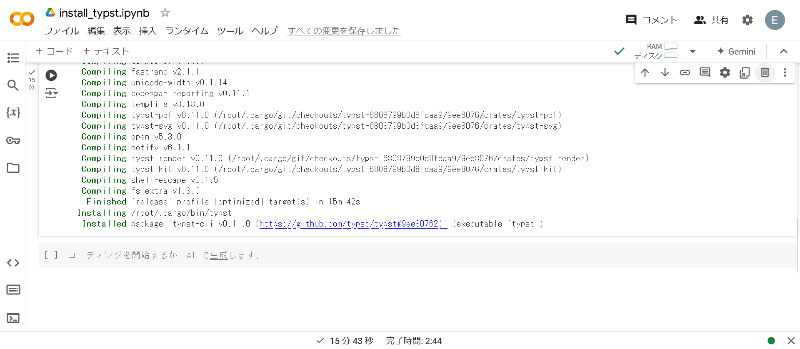
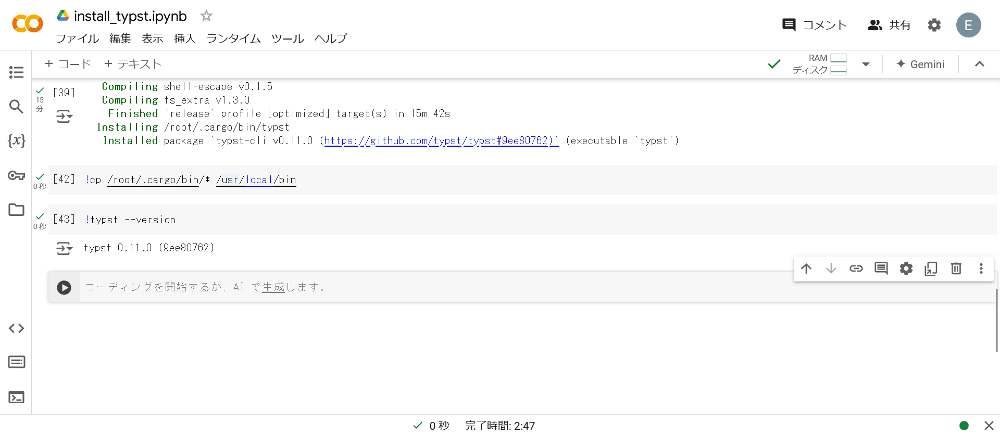
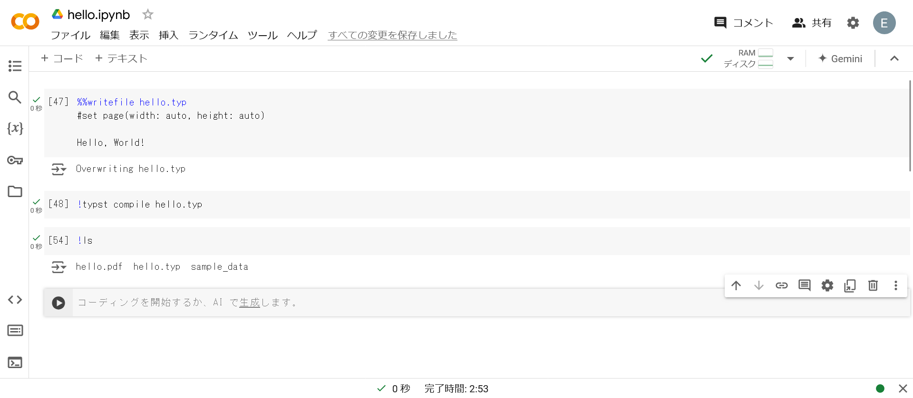
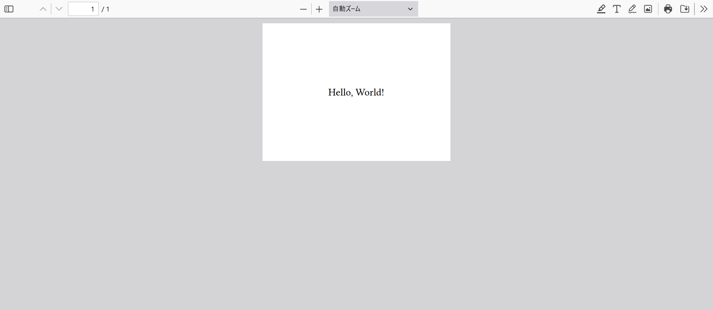
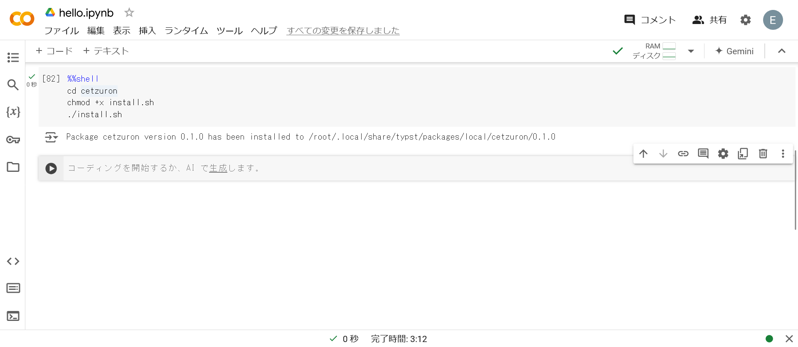
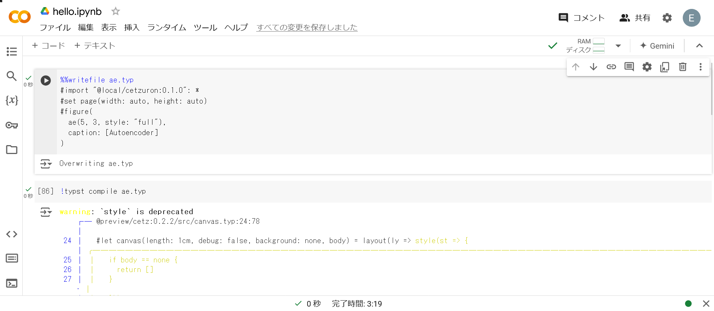
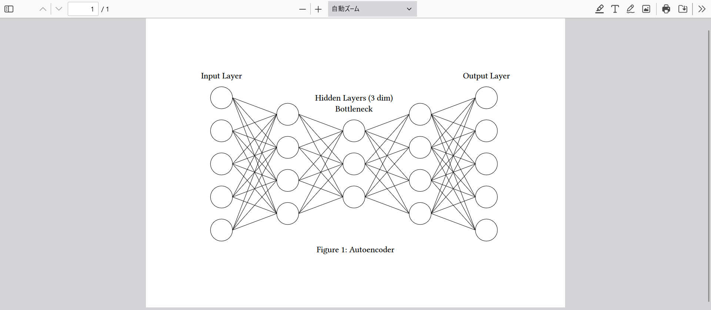

Typst#
Typstは組版システムです. 今までに挙げてきた言語とは目的が異なりますが, 実験的にGoogle ColaboratoryでTypstが使用できるのかを調査してみます. なお, Typstは, 文書ファイル(.typ)をコンパイルしてPDFを生成するため, マジックコマンド%%writefileを使用して, セル内のコードをファイルとして保存し, そのファイルをコンパイルします.
インストール#
TypstはGoogle Colaboratoryの初期設定では使えないため, まずはインストールします.
以下のコードをGoogle Colaboratory上で実行します.
Warning
Rustがインストール済みであることを前提とします. 未インストールの方はRustを参照してください.
!cargo install --git https://github.com/typst/typst --locked typst-cli
Tip
シェルコマンドを実行する際には, !を使用します (複数行の場合は%%shell).
以下のような出力が得られればOKです.

!cp /root/.cargo/bin/* /usr/local/binでバイナリファイルをローカルにコピーします.typst --versionでインストール確認をします.
以下のような出力が得られればOKです.

Hello, World!#
以下は, TypstでHello, World!をする例です.

!lsで確認すると, hello.pdfが生成されていることが分かります. 実際に, PDF Viewerで確認すると以下のようになります.

解説#
1つ目のセル#
%%writefile hello.typ
#set page(width: auto, height: auto)
Hello, World!
ここでは, %%writefile hello.typにより, セル内のコード(マジックコマンド以下)をhello.typとして保存しています.
2つ目のセル#
!typst compile hello.typ
ここでは, typst compileでhello.typからhello.pdfを生成しています.
ニューラルネットワーク描画#
せっかくなのでニューラルネットワークを描画しましょう. ニューラルネットワークの描画には, 私が作成しているcetzuronパッケージを使用します.
まずはインストールします.
cetzuronのインストール#
git cloneします.
!git clone https://github.com/rice8y/cetzuron.git
install.shでインストールします.
Note
一応, justfileと.batのインストールスクリプトもあります.
%%shell
cd cetzuron
chmod +x install.sh
./install.sh
以下のような出力が得られればOKです.

オートエンコーダ#
以下は, オートエンコーダを描画する例です.

warningが出ていますが無視します. 出力は以下のようになります.

解説#
省略します.